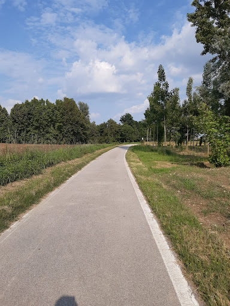

Il “maglio” è un’area naturalistica, situata nella frazione di Borghetto di San Martino di Lupari. Ultima a nascere tra le aree naturalistiche di San Martino, per volere della comunità del luogo. La sua storia è molto antica, perché esistono documenti comprovanti la costruzione di una Chiesetta (attuale Chiesetta di San Massimo) in questo sito, risalenti a prima dell’anno 1000 d.C. La chiesetta si trovava al limite massimo della centuriazione romana di Borgoricco già in età romana. Da questo limite geografico, si estendevano le paludi dei lupi “di lupari”, dalle quali prende il nome il nostro territorio. La chiesetta veniva gestita dalle comunità religiose già esistenti presso Camposampiero. Attualmente si sviluppa un’oasi attraversata da corsi d’acqua e boschetti di roveri, ontani e olmi. La zona è umida e si trova al confine superiore della fascia di risorgiva della sinistra Brenta. Dai “fontanassi”, fontanili naturali che emettono in superficie acqua di risorgiva, fuoriesce acqua a temperatura costante, che si incanala nel Rio Valdiera e nel Rio Vandura, affluenti del Brenta. E’ possibile percorrere e sostare presso l’area e visitare l'adiacente Chiesetta di San Massimo, secondo le modalità e gli orari che sono indicati in loco all’ingresso.
